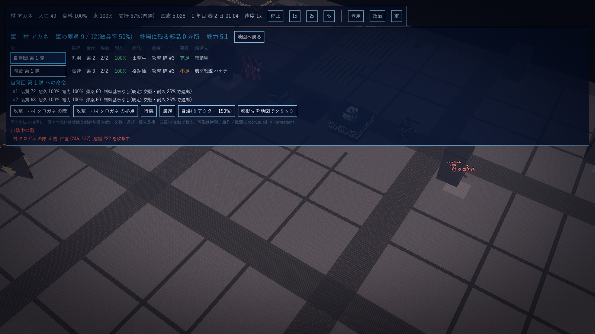
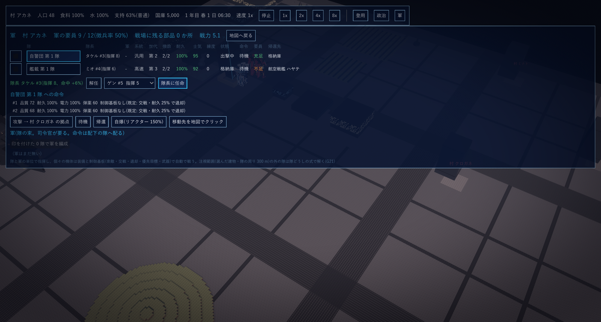
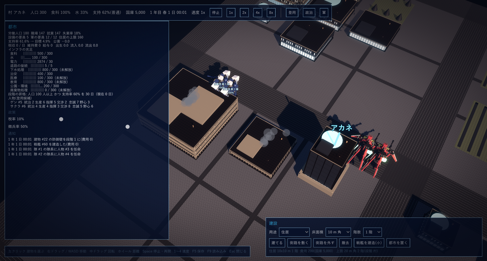

G21 軍の粒度(隊の集約): 設計案と決定事項
2026-10-16 作成。G2(計算の単位 Unit を一つに統一し粒度を段階で変える)と G4(村 = 1 人 1 Unit、町 = 分隊、都市 = 小隊〜中隊、国家 = 大隊〜師団)を実装に落とす設計案。きっかけは G16 第 11 節の実測(個機の計算は交戦中 1,000 機前後が実時間の限界)。2026-10-16 の回答で確定(#1 は「隊と軍」とし、それぞれに指揮官が要る。他はそのまま)。
1. 位置づけ
今の戦闘(G16)は 1 機ずつ索敵・射撃を解いている。G2 のとおり、計算の単位を「隊(Unit)」に揃え、注視していない隊は隊どうしの式で解く(工場の集計近似 G12 #17 と同じ考え方: 見ている所だけ細かく、それ以外は近似で軽く)。隊の中の機体の記録(耐久・弾薬・部品)はそのまま残すので、回収・修理・徴兵・登用の仕組みは変えない。
2. 着手前の決定事項(2026-10-16 確定)
| # | 項目 | 決定 | 根拠・備考 |
|---|---|---|---|
| 1 | 単位と指揮官 | 単位は「隊」と「軍」の 2 段(回答で確定)。隊 = 同じ系統・同じ世代 1〜12 機、軍 = 隊の束(都市で隊 3〜12、国家で隊 10〜100)。それぞれに指揮官(人物)が要る: 隊には隊長、軍には司令官を人物から任命する。指揮官のいない隊は出撃できず、指揮官のいない軍は軍としての命令を受けない(隊には個別に命令できる)。指揮官の「指揮」の能力が、隊なら命中率 ±2% / 点、軍なら配下の全隊に ±1% / 点(G19 #2 の自警団長〜将軍の国の係数に重なる)。隊が全滅した指揮官は候補に戻る(死亡は入れない)。G19 の数で増える「隊長」の枠はこの任命に置き換える | G2「指揮の階層: 自警団長 → 隊長 → 将軍 → 元帥」「登用した人物の指揮能力が Unit の練度と士気に効く」 |
| 2 | 二つの解き方 | 個機(今の式): 機体ごとに索敵・目標・冷却・命中・ダメージ。集約: 隊ごとに「隊の中心位置・生存機数・平均の耐久 / 弾薬 / 電力」で解く。発射数 = 生存機 × 発射率、命中は平均の精度と相手の平均速度、ダメージは相手の隊の耐久の合計(プール)に入れ、プールが 1 機分減るごとに 1 機を撃破(機体の記録は先頭から順に減らす)。回収の部品・損耗比・帰還先・修理は個機と同じ記録を使う | G2「命中・損耗の式は Unit 同士で一つだけ持ち、人数を係数として掛ける」 |
| 3 | 切り替えの規則 | 村(段階 1)は常に個機。町以降は、注視範囲(クライアントが命令 SetBattleFocus(x, y, 半径) で知らせる。都市の画面なら選んだ隊・建物の周り 300 m、戦場の試作なら画面の中心)の中の隊は個機、外の隊は集約。個機と集約が撃ち合うときは、集約側の発射は相手の機体へ機体番号の順に配り、個機側の射撃は集約側のプールに入れる。切り替えは隊ごとに毎ティック判定(境界をまたいでも記録は連続) | G12 #17 の SetViewed と同じ型。計算側はカメラを知らない(G1 の原則) |
| 4 | 索敵と遮蔽(集約) | 隊の中心どうしの距離で判定(索敵範囲は隊の平均)。遮蔽は中心どうしの射線 1 本(DDA + 地形)。ステルス(第 5・6 世代)と誘導弾の規則は隊の世代で同じに効く | 計算量を 機体 × 敵機 から 隊 × 敵隊 へ(2,400 機 = 200 隊なら 1/144) |
| 5 | 移動(集約) | 隊は中心 1 点で動き(速度は系統の値)、機体は陣形の位置に置かれる(描画と個機へ戻すときの位置)。経路探索は入れない(今の直進のまま)。フローフィールドは後 | G2「経路探索は Unit ごとに 1 回」 |
| 6 | 軍の命令 | FormArmy(名前, 隊の一覧)/ DisbandArmy / OrderArmy(命令は OrderSquad と同じ種類)/ AssignCommander(隊か軍, 人物)。軍の中心を基準に、隊ごとの陣形の位置(横列 / 縦列 / 散開を軍の単位で)に配る。国の係数(自警団長〜将軍・元帥)は既存のまま | G7・G16 の隊の命令の上に 1 段 |
| 7 | 描画 | 集約の隊は代表機 1 体(今の町以降の描画そのもの)。個機の隊は全機。軍は名札に隊数と機数 | G2「10 万体でも 1 ノード」 |
| 8 | 決定論と保存 | 集約の式も同じ乱数列を使い、焦点の命令も命令列に残るので、同じ命令列は同じ結果になる。保存の写しには隊の記録(機体ごと)だけを書く(集約の途中値は毎ティック求め直す) | G1 の原則、G12 #20 |
| 9 | 目標の性能 | 注視の外が全て集約のとき、交戦中 12,000 機(1,000 隊)で実時間以上(1 ティック 16 ms 未満)。10 万機は 8,000 隊 = 軍 100 程度で、同じ式が 隊 × 敵隊 に比例するので 軍単位の索敵(軍の中心で粗く絞ってから隊へ)を足して届かせる | G16 第 11 節の実測を基準に |
| 10 | 第 1 段階の範囲 | 計算(GPS.Sim): 集約の式(索敵・射撃・損耗・移動)、焦点の命令と切り替え、個機と集約の相互作用、軍と命令、指揮官の任命。検証: xunit(個機と集約で損耗の期待値が一致すること、切り替えで記録が連続すること、保存と再生)と 計測(2,400 機・12,000 機)。都市の画面は選んだ隊・建物の周りを焦点に、軍の画面に軍の編成と指揮官の任命。含めない: 士気・練度、経路探索(フローフィールド)、軍単位の粗い索敵(10 万機向け。計測で必要なら次) |
3. 第 1 段階の実装記録(2026-10-16 完了)
#1〜#10 を sim/GPS.Sim/Army.cs と Combat.cs の集約の式に実装し、xunit 95 件(既存 89 + 軍 6)が全て通る。
| 区分 | 内容 | ファイル |
|---|---|---|
| 隊長・司令官 | AssignCommander(隊 / 軍, 人物)・DismissCommander。人物は国の役職・隊長・司令官を掛け持ちできない(Appoint も拒む)。自軍の隊は隊長がいないと出撃できず(no_commander の通知)、軍は司令官がいないと命令と出撃を受けない。効果 = 隊長の指揮 ±2% / 点、司令官 ±1% / 点(命中率)。隊が全滅すると隊長は候補に戻る。隊長・司令官は役職と同じく不満が溜まらず、候補の入れ替わりの対象外 | Army.cs、Politics.cs |
| 軍 | FormArmy(名前, 隊)・DisbandArmy・OrderArmy(命令・目標・陣形)・DeployArmy。軍の陣形(横列 30 m 間隔 / 縦列 / 散開)で隊ごとの位置に配り、攻撃の目標は全隊で同じ | Army.cs |
| 注視範囲と切り替え | SetBattleFocus(x, y, 半径)。村(段階 1)と自爆の命令の隊は常に個機。町以降は注視の外の隊を集約で解く(隊ごとに毎ティック判定、記録は連続)。都市の画面は選んだ建物(無ければ拠点)か軍の画面で選んだ隊の周り 300 m を注視にする | Combat.cs(Tick)、CityScreen.cs(SetFocus) |
| 集約の式 | 隊の中心(毎ティック 1 回だけ求める)と先頭機の性能で、索敵(隊の空間格子 64 m、ステルスは相手の世代、遮蔽と地形は中心どうしの射線 1 本)・移動(中心 1 点で動き、機体は陣形の位置)・射撃(発射数 = 戦う機体 × 発射率を端数ごと持ち越し、資源は機体から順に、命中は平均、ダメージは相手の「下がっていない先頭の機体」へ)。撃たれて 25% を切った機体は下がって撃たず、全機が下がれば隊が帰還(個機の既定の退却と同じ規則にして損耗を合わせた)。個機と集約が撃ち合うときは記録が共通なのでそのまま成立する | Combat.cs(StepAggregated) |
| 検証 | 同じ場面(4 隊 × 12 機どうし、90 秒)を個機と集約で解いた損耗: 個機 味方 48 / 敵 23、集約 味方 48 / 敵 9(許容 ±14 機)。注視の切り替えで記録が連続すること、写しの読み込みで一致することを確認。計測: 集約 2,400 機 2.4 ms / ティック(7 倍速)、12,000 機 12.5 ms(1.3 倍速。目標の実時間以上を満たす)。個機は 240 機 2.3 ms、2,400 機 49 ms | ArmyTests.cs |
| 計測で見つけて直したもの | 格納庫の給電で機体を線形探索していた(24,000 機で 1 ティック 100 ms → 機体 Id の索引)。隊の中心を呼ぶたびに平均していた(ティックごとに 1 回)。バッテリー機がいない隊の給電の計算を飛ばす | Factory.MechById、Combat.cs |
| 画面 | 軍の画面: 隊の一覧に印・隊長・軍の列、選んだ隊の隊長の任命と解任(候補は役職も指揮も持たない人物)、印を付けた隊で軍を編成、軍ごとに司令官の任命・出撃・攻撃・帰還・解散。見本の村は隊長 タケル(自警団)・ミオ(艦載) | CityScreen.Army.cs、SampleCity.cs |

軍の画面: 自警団 第 1 隊(隊長 タケル)と艦載 第 1 隊(隊長 ミオ)。選んだ隊の隊長の任命・解任、印を付けた隊で軍を編成し司令官を任命する。
4. 第 2 段階: 10 万機向けの粗い索敵と軍単位の集約(2026-10-16 完了)
#9 の「軍単位の索敵」を実装し、集約の式の単位を「軍」(全隊が注視の外にある軍)か「隊」に揃えた。xunit 99 件(既存 97 + ずれの検査 2)が全て通る。
| 区分 | 内容 | ファイル |
|---|---|---|
| 粗い索敵 | 256 m の粗格子に陣営の有無(ビット)を持ち、周り 3 × 3 に他の陣営がいない単位は細かい索敵(64 m 格子・射線)を飛ばす。索敵は 3 ティックに 1 回(単位の番号でずらす)、間は前の目標を保つ | Combat.cs(StepAggregated)、combat.json(cover.senseEvery) |
| 単位 = 軍か隊 | 軍に属し全隊が集約の隊は軍 1 つを単位にする(中心・索敵・目標・移動・射撃を軍で 1 回)。軍は軍の陣形の位置に隊を、隊は隊の陣形の位置に機体を置く。射撃は単位の戦う機体の合計 × 発射率で、相手の単位の「下がっていない先頭の機体」へ。10 万機 = 8,000 隊が 668 軍になり、索敵の対象が 隊 × 敵隊 から 軍 × 敵軍 に減る。FormArmy は先頭の隊と同じ陣営なら受ける(AI 勢力の軍も作れる) | Combat.cs、Army.cs |
| 計測で見つけて直したもの | 隊・軍・単位の線形探索(FirstOrDefault・Contains・ArmyOf)を辞書に。指揮の効果とダメージを射撃ごとでなく単位ごとに 1 回。機体の品質と原子炉の出力を機体ごとに記憶(QualityCache・ReactorKwCache)。個機の索引(機体の辞書・空間格子)は注視の中に隊があるときだけ作る。位置の置き直しは 3 ティックに 1 回で、間は動いた分だけずらす。隊の中心は 1 回の走査で求める | Combat.cs、Factory.cs |
| 計測で見つけた不具合 | 集約の置き直しは機体の平均位置を基準に陣形を置くが、縦列・散開の陣形は重心が原点にないため、止まっている単位が置き直しのたびにずれていた(縦列 12 機で 1 回 約 20 m)。陣形の重心を単位の中心に合わせて置くように直し、隊と軍で 300 ティック止まっていることを検査に加えた | Combat.cs、ArmyTests.cs(Aggregated_HoldingUnitDoesNotDrift) |
| 仕上げ: 機体の走査を 1 本に | 23.5 ms の内訳(集約の準備 5.8、機体の走査 7.7、移動 2.9、給電 4.4)を測って、機体(96,000 件)に触る走査を隊ごとの事前走査 1 本にまとめた: 生存機・戦う機体・リアクターの回復・給電をその 1 本で済ませ、生存数と戦う機体の数は撃たれた側で逐次減らす(走査し直す版と同じ意味 = 事象の数が一致)。機体の写しに設計(Mech)の参照と電源の種類を記憶し辞書引きをしない。隊の中心は置いた位置から分かるので次のティックの分類で走査しない。準備の辞書は隊の並びの番号を添字にした配列と持ち回りの入れ物に。止まっていて印も変わらない隊は機体に触らない | Combat.cs(Recharge・FieldCharge・MechOf・AliveOf)、Factory.cs(Agg*) |
| 実測(1 ティック、交戦中・全て集約) | 2,400 機(200 隊)0.6 ms(28 倍速)、12,000 機(1,000 隊)3.4 ms(4.9 倍速)。96,000 機: 隊のまま(8,000 隊)17.3〜17.7 ms(1.0 倍速)、668 軍に束ねて 13.9 ms(1.2 倍速)。10 万機を軍に束ねれば実時間(16.7 ms)に収まる(仕上げ前は 23.5 ms)。96,000 機の計測は数分かかるので環境変数 GPS_SCALE=1 のときだけ走る(Aggregated_HundredThousand・_InArmies) | ArmyTests.cs |
5. 残る粗
| 項目 | 状態 |
|---|---|
| 10 万機を隊のままで実時間 | 軍に束ねない 8,000 隊は 17.3〜17.7 ms(境界)。軍に束ねる前提なので保留ではなく、必要になれば集約の式を陣営ごとに並列にする |
| 軍単位の粗い索敵(10 万機向け) | 完了(第 4 節)。粗格子と軍単位の集約で 96,000 機 36 ms → 23.5 ms |
| 10 万機で実時間 | 完了(第 4 節 仕上げ)。機体の走査を 1 本にまとめて 668 軍で 13.9 ms / ティック(1.2 倍速) |
| 士気・練度 | 完了(第 6 節)。損耗・撃破・格納庫・補給・指揮官で増減し、命中と下がる閾値に効き、崩れると帰還 |
| 経路探索 | 完了(第 7 節)。4 m の障害物格子と隊ごとの A*、機体の 1 歩の回避。フローフィールドは要らなかった(直線が通る間は探索しない) |
| 集約の隊の自爆・制御基板 | 完了(第 8 節)。基板は集約でも個機と同じ間隔で評価(退却・交戦・自爆が効く)。自爆を出した隊は個機に戻して爆発を解く |
6. 士気・練度(2026-10-16 実装)
#10 で後回しにした士気と練度を隊の記録として入れた。数値は game/data/combat.json の morale にあり、ここに書いた値は初期値(調整は数値の変更だけで済む)。
| 項目 | 規則(初期値) |
|---|---|
| 士気(0〜100、隊ごと) | 隊の編成時 70。自隊の機体が撃破されるたび −4、敵機を撃破するたび +2(軍の単位で戦っているときは軍の全隊に)。1 時間ごとに、格納庫にいれば +3、出撃中で生存機の過半が補給切れ(電力か弾薬が 30% 未満)なら −2、自軍の隊で隊長がいなければ −1、指揮官がいれば(指揮 − 5) × 0.2 |
| 士気の効き | 命中 × (0.8 〜 1.1 を士気で補間。70 で 1.01)。機体が下がる耐久の閾値は士気 50 未満で上がる(50 で既定の 25%、0 で 50%。50 以上は既定のまま = 普通の士気で挙動を変えない)。20 を割った出撃中の隊は崩れて帰還(命令が帰還に置き換わり、通知「士気が崩れ、帰還する」) |
| 練度(0〜100、隊ごと) | 編成時 0。敵機を撃破するたび +3、撃った時間 1 時間ごとに +1。命中 × (1 + 0.15 × 練度 / 100)。下がらない(機体の入れ替えによる希釈は入れていない = 隊の機体は固定) |
| 写し | 士気・練度・「この 1 時間に撃ったか」を写しに残す。併せて機体の飛行中と隊の集約中の印も写しに残すようにした(命中と切り替わりの処理に効くので、読み込み後に同じ進行にならなかった) |
| 画面 | 軍の画面の隊の一覧に 士気 / 練度 の列(士気は 30 未満 赤、60 未満 橙) |
集約の忠実度の改善(士気の検証で見つけた): 士気で下がる閾値が動くと、個機では下がった機体が個々に帰って生き残るのに、集約では下がった機体を陣形の中に置いたままにしていたため(全機が下がってから塊で逃げ、追いつかれる)、損耗が大きく食い違った(個機 敵 26 残 / 集約 0 残)。集約でも下がった機体は陣形から外れて個々に帰るようにし、塊の置き直しで引き戻さず、射撃の目標は個機の索敵(最も近い敵機)と同じく「塊の戦う機体は単位の距離、帰る機体は実距離」で最寄りを撃つ(射程 farMul の外は撃たない)ようにした。結果、同じ場面の損耗は 個機 味方 48 / 敵 26、集約 味方 48 / 敵 27(第 3 節の検証時は 23 対 13)。検査は xunit 104 件(士気 4 件を含む)。
速度(96,000 機、3 回の計測): 668 軍 14.4〜20.2 ms / ティック、8,000 隊のまま 18.8〜29.9 ms。最小値は士気導入前と同程度で、ばらつきは計測機の負荷による(帰る機体の個別移動と最寄りの計算が増えた分は 1〜2 ms)。

軍の画面(見本の村、宣戦後に防衛で出撃させた直後): 士気 95 / 92(格納庫で 6 時間回復 + 隊長の指揮)、練度 0。
7. 経路探索(2026-10-16 実装)
#5・#10 で後回しにした経路探索。隊は建物を素通りして直進していたのを、建物を避けて歩くようにした(sim/GPS.Sim/Pathing.cs)。G2 の「経路探索は Unit ごとに 1 回」のとおり隊(集約なら単位)ごとに解き、機体は隊の中継点の周りの陣形の位置へ向かう。
| 項目 | 規則 |
|---|---|
| 障害物の格子 | 4 m のセルに建物の番号(0 は空き)。立っている建物(戦艦と陥落した建物を除く)の床の中にセルの中心があるセルを塞ぐ。4 m の街路はセルの中心が通る。建物の増減・陥落で作り直す(遮蔽の格子と同じ合図) |
| 直線が通るか | 4 m 刻みの標本で塞がれたセルに当たらないか。始点と終点のセルは除く(置かれた位置が床の中でも出られ、格納庫の角など床の中の目標へも寄れる)。確認は手前 256 m までで 3 ティックに 1 回(10 万規模向け。遠い目標は近づいてから見直す)。帰還のときは目的の格納庫の建物を通ってよい |
| 経路 | 直線が塞がれているときだけ A*(8 方向、角を切らない、目標のセルが塞がれていれば周り 3 セルまでの空きへ、格子の外からは直進)。中継点はセルの中心で、先へ直線が通るものは飛ばして減らす。10 秒ごとと目標が 4 m 以上動いたときに引き直す。作業配列は工場ごとに使い回し(世代印で未訪問を表す) |
| 隊の動き | 隊の目標(移動先・攻撃する隊の中心・攻撃する建物の手前・回収先・帰還先)までの次の中継点を隊ごとに求め、個機は中継点の周りの陣形の位置へ、集約は単位の中心を中継点へ動かす。機体ごとの目標機(索敵で射線が通っている相手)へは直進。経路と中継点は隊の記録(命令向けと帰還向けの 2 つ)として写しに残す(読み込み後も同じ進行) |
| 機体の 1 歩 | 個機: 次の位置が建物の床なら向きを ±45°, ±90°, ±135° とずらして空いている方へ(全て塞がれていれば動かない。飛行中は越える)。陣形が建物にまたがるときの個々の回り込み。集約: 陣形の置き場所が床の中なら中心へ向かって 4 m ずつ寄せる |
| 検証 | 格子・直線・A* の単体、40x40 m の建物の向こうの目標へ隊が床に入らずに着くこと(個機と集約)、経路が写しに残り読み込み後も同じ進行。計測で見つけた無駄: 帰還先(格納庫の角)の直線が同じ建物の縁で塞がれ、遠くの帰還機が毎回 1,000 m の A* をしていた(目的の建物を通れる扱いと格子の外からの直進で 2 万回 → 27 回)。xunit 108 件。撮影で見つけた描画の不具合: 都市の画面の建物(戦艦以外)が床の角を中心に描かれていた(階モジュールの原点は中心、計算と当たり判定は角)。床の中心に置き直し、隊が建物を避けて見えるようになった(以前は屋根の上を歩いて見えた)。経路は壁ぎわのセルに加点して街路の中央寄りを通る |
| 速度 | 12,000 機 3.9 → 5.1 ms / ティック(直線の確認の分)。96,000 機は軍 14.8〜18.2 ms(導入前と同じ範囲) |

見本の村: 自警団の隊に格納庫の向こう側への移動を命じ、建物を回り込んでいる途中。
8. 集約の隊の制御基板(2026-10-16 実装)
| 項目 | 規則 |
|---|---|
| 評価 | 集約の隊でも機体ごとの制御基板を個機と同じ間隔(基板の interval)で評価する。機体の値(耐久・電力・弾薬・隊の命令)はそのまま、敵の距離・数・世代は単位の索敵の値(単位の中心どうしの距離、相手の単位の生存機数、相手の隊の世代)を入れる |
| 効く出力 | 退却(下がって個々に帰る)、交戦(0 の機体は撃たず、発射数にも入れない。塊の中には残る)、自爆(出した隊は個機に戻し、個機の式で爆発させる)。目標の優先・武器の選択・索敵範囲の上書きは集約では効かない(単位で解くため。個機に戻れば効く) |
| 検証 | 耐久 60% 未満で退却する基板が集約でも既定の 25% より早く効く、交戦 0 の基板で味方だけ撃たない、敵が 100 m 以内で自爆する基板で隊が個機に戻って爆発する。xunit 111 件 |